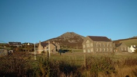
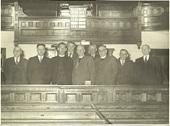
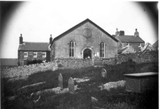
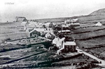
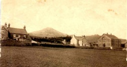
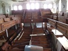

Capel Isa
Bu’r Parch Dafydd Jones. Llangan, yn pregethu o gefn trol yma yn y cyfnod cynnar. Ar y dechrau, cynhaliwyd yr achos yn Abergafran. Adeiladwyd y capel cyntaf tua 1780. Dechreuwyd y gwaith ar y capel presennol (5ed), yn 1903. Evan Roberts, y Diwygiwr, oedd y cyntaf i bregethu yma yn 1905 er nad oedd y gwaith paentio wedi cael ei orffen! Adeiladwyd ef fel canolbwynt crefyddol a chymdeithasol i’r gymuned leol mewn cyfnod pan oedd y diwydiant chwareli yn ei anterth.
Dyma lun Capel Isaf o ochr isaf pentref
Dyma gofnod o’r Capel yn y Non-parochial Register
Llithfaen chapel – Welsh Calvanistic Methodist Founded 1785.
Capel M.C. Dechreuwyd adeiladu yn 1870 a chostiodd tua £430. Pregethwyd ynddo am y tro olaf 27 Mawrth, 1904. Yn rhedeg yn groes i’r capel roedd Ty Capel a stabal.
Dyma gofnod am Gapel MC Llithfaen gan Cadw:
Mae Capel Methodistiaid Calfinaidd, Llithfaen (rhif record CADW 21726) ar ochr ddeheuol y B4417 rhwng Llanaelhaearn a Nefyn. Cafodd ei gofrestr fel gradd II* ar 18/5/1999. Mae’r capel, a’r pentref yn ward Cyngor Cymuned Pistyll. Mae wedi ei leoli ychydig o ganol y pentref ar yr ochr ddwyreiniol.
Y capel presennol, sy’n cael ei alw yn lleol yn Capel Isaf, yw’r pumed capel i gael ei adeiladu yn y pentref ar gyfer y gymuned Fethodistaidd oedd yn tyfu yn y cyfnod yma. Codwyd ef yn 1905 gan Griffith Jones, Morfa Nefyn yn ôl cynllun Owen Morris Roberts, Porthmadog.
Yn allanol mae to llechi ar adeilad o waith cerrig ithfaen wedi ei rendro a’r conglfeini a’r colofnigau wedi eu codi. Mae’n wynebu i’r gorllewin dros gwrt blaen a wal rhyngddo a’r ffordd fawr. Mae ei gyfansoddiad yn gymesur a’r rhan ganol ychydig yn ôl o wyneb yr adeilad mewn colofnig. Ceir ynddo bar o ddrysau panelog. Ceir 5 ffesest fwaog ar ochrau’r adeilad a silffoedd ffenest llechi. Tu cefn i’r prif adeilad ceir festri fawr wedi ei gosod ar ongl sgwâr i’r capel ac adeilad bychan 2 lawr yn cynnwys ystafelloedd bychan a gwasanaethau yn cysylltu y ddau brif adeilad.
Mae tu mewn y prif gapel wedi ei gynllunio i eistedd tua 700 heb newid yn ei gynllun o gwbl ers 1905.Mae’r to plastar mewn adrannau wedi ei fowldio a chylgigau mawr. Mae’r waliau wedi eu plastro a’u peintio fel cerrig. Pȋn yw’r gwaith coed. Mae galeri o 5 rhes o seddi yn cael ei ddal ar golofnau haearn rhychiog. Mae i’r galeri du blaen addurniedig a cgerfiedig ac mae’n nodedig oherwydd y corneli crwm ar y pedair ochr yn cynnwys lle pwrpasol ar gyfer y côr meibion lleol ar y pryd ar yr ochr ddwyreiniol a galeri is tu ôl i’r pwlpud ar gyfer yr organ. Mae seti’r sȇt fawr wedi eu clustogi a grisiau y ddwy ochr i’r pwlpud sydd wedi ei gerfio a blodau haul. Ceir dwy gadair weinidog gerfiedig bob ochr i’r pwlpud. Mae llwyfan yn ffitio ar y sȇt fawr ar gyfer digwyddiadau yn y capel. Mae lobi yn fynedfa i’r capel ar hyd lled yr adeilad a phanel o wydr addurniedig rhyngddo a’r prif gapel. Mae’r cloc gan Robert and Owen, Caernarfon ac yn dyddio i 1905 hefyd. Mae’r cysylltiad i’r festri yn cynnwys lle tân a chegin, ystafell ddiaconiaid ar yr ochr ddeheuol. Mae’r festri fawr yn gallu eistedd 300 ac yn cynnwys meinciau y gellir eu defnyddio naill ochr, pwlpud cerfiedig a chodiad ar yr ochr ddwyreiniol.
Yn 1999 roedd yn cael ei ddisgrifio fel capel mawr wedi ei gadw yn dda a’u du mewn trawiadol wedi ei gynllunio yn ofalus, wedi ei adeiladu fel ffocws crefyddol a chymdeithasol ar gyfer y gymuned leol ar amser pan oedd y diwydiant chwareli yn ei anterth yn yr ardal.
Yr Herald Gymraeg, 14 Ebrill 1903
Llithfaen – CAPEL NEWYDD – yn ateb i’r hysbysiad yn yr “Herald,” daeth chwech i geisio am wneyd capel newydd y Methodistiaid. Derbyniwyd cynnyg Mr Griffith Jones, Morfa Nefyn i wneud y gwaith am £1858 10s
Crynodeb o Adroddiad Arifog ar hanes y capel.
“Ystyriais y dyddiau gynt”
“Hyn a ysgrifennir i’r genhedlaeth a ddêl”
Dyma’r geiriau ar wyneb ddalen adroddiad Cronfa Adeiladu Capel M.C. Llithfaen a gyhoeddwyd yn 1910. Yng nghynffon yr adroddiad mae ‘Trem ar Hanes y Methodistiaid Calfinaidd yn Llithfaen’ gan J.O.Jones (Arifog).
 Golygfa o'r capel yn 1910
Golygfa o'r capel yn 1910
Casglwyd y swm anrhydeddus o £1370 3 swllt a 4 ceiniog gan y gynulleidfa er mwyn adeiadu’r capel newydd. Roedd hwn yn gyfran dda o’r £3081, 8 swllt a 2 geiniog y costiodd y capel i’w adeiladu. Daeth gweddill yr arian gan roddwyr a benthycwyr eraill, rhai cyn belled a Chaernarfon, Llanllyfni a hyd yn oed Warrington a Manceinion. Cadeirydd y pwyllgor gweithiol oedd y Parch. E.S. Morris, y trysorydd oedd Mr. William Evans, Post Office, yr ysgrifennydd ariannol oedd Mr. Evan Williams, Tanyffynnon a’r ysgrifennydd cyffredinol oedd Mr. H. Griffith, Tŷ’r Ysgol. Yr ysgrifenyddion a thrysoryddion dros y gynulleidfa oedd y meistri W. H. Roberts, Post Office; Mathew J. Williams, Alpha House; William Griffith, Bryn Dirwest; Richard Williams, Brynffynnon; R.J. Parry, Cilia; ac Evan Griffith, Victoria Terrace. Cynlluniwyd yr addoldy gan y meistri Owen Roberts a’i fab, Porthmadog ac fe’i adeiladwyd gan Mr. Griffith Jones, Morfa Nefyn.
Cynhaliwyd y gwasanaeth cyhoeddus cyntaf gan Evan roberts, diwygiwr ar Ragfyr 12fed, 1905. Darllenwyd a gweddiwyd gan y Parch. E. Sidney Morris. Nid oedd yn gwbl barod ar y pryd, gan fod y paentwyr heb orffen eu gwaith arno.
Pregethwyd yn y capel newydd ar Ebrill 1af, 1906 a gweinyddwyd y briodas gyntaf ar Awst 15ed. Priodwyd John Williams, Brynffynnon â Mary Ellen Griffiths, Fronhyfryd Terrace. Cawsant Feibl hardd yn anrheg gyda llun o’r capel newydd ar yr wyneb ddalen.
Roedd Llithfaen, wrth gwrs, yn y cyfnod yma ar y brif ffordd rhwng Pen Llŷn ac Arfon a Môn. Cred Arifog fod hyn wedi arwain at y ffaith fod crefydd wedi dod yma mewn cyfnod mor gynnar. Roedd yr achos yn Llithfaen yn “hen o ran ei gychwyniad, a diddorol o ran ei hanesiaeth”.
Blaenoriaid yn y Set Fawr
Yn y cyfnod yma roedd cryn newid wedi digwydd yn yr ardal mewn canrif. Pentref tlotaidd di-addurn a dim ondychydig fythynod yma ac acw oedd yma. Yr oedd y trigolion bron yn gyfan gwbl yn amaethwyr a gweision i amaethwyr. Erbyn troad y ganrif ddiwethaf roedd wedi ei newid yn ardal weithfaol a’r trigolion yn “troi cerrig y mynydd yn fara”.
Ceir y cyfeiriad cyntaf at grefydd yn yr ardal yn llyfr y Parch. Robert Jones, Rhoslan, lle sonnir am John Roberts, Nant Gwrtheyrn, yn pryderu yng nghylch iachawdwriaeth ei enaid ac yn breuddwydio ei fod yn gweld “megis pen yn dyfod oddiwrth y Dehau ac yn goleuo y wlad, ac yn llefain nes bod cyffro a deffroad trwy yr ardaloedd”. Daeth ei freuddwyd yn wir ac fe gafwyd diwygiad trwy Lloegr, yr Alban, America a Chymru.
Nid oes sicrwydd pa flwyddyn y dechreuwyd prgethu yn Llithfaen ond bu y Parch. Dafydd Jones o Langan (1735-1810) yn pregethu yma yn gynnar iawn. Dywed traddodiad mai mewn lle o’r enw “Cae Grug” – cae yn ymyl lle mae Gowel heddiw y cynhelid yr oedfa. Trol oedd y bwlpud ac roedd i’n ddiwrnod o haf a thyrfa fawr yn gwrando arno. Rhaid bod achos crefyddol yma cyn 1778 oblegid ceir cofnod ar garreg fedd yn Carnguwch am un yn muno â’r eglwys yn y flwyddyn honno.
Yn Abergafren (Yr Aber), ffermdy bach to gwellt yn y cyfnod yma yr arferiad ymgynnull ar y dechrau. Os oedd hi’n braf a’r gynulleidfa yn rhy fawr i’r tŷ cynhelid y gwasanaeth o flaen y tŷ lle’r oedd llethr manteisiol ar gyfer y pregethwr a’r gynulleidfa. Safai’r pregethwr ger draenen fawr gyferbyn â’r drws. Goroesodd y ddraenen y tŷ gwreiddiol a gafodd ei adeiladu a’i wyngalchu. Dirmygid yr addolwyr a fyddai’n mynd yno gan eu galw yn ‘Bengryniad’ ac epil Howel Harris’.
Y Capel Cyntaf
Adeiladwyd y capel cyntaf tua 1780 ar safle’r ganolfan heddiw. Cafwyd gwrthwynebiad ffyrnig i adeiadu y capel gan Mrs. Llwyd oedd yn byw yn y Ffridd. Adeilad to gwellt oedd y capel hwn gyda llawr pridd, ffenestr bychain, a thaflod neu oriel fechan dros ran ohono. Oherwydd nad oedd capel wedi ei adeiladu yn y Pistyll, Llanaelhaearn na Llwyndyrus cyrchai y bobl i Lithfaen o bellter mawr. Bu’r Parch. Thomas Charles o’r Bala yn pregethu yn yr hen addoldy to gwellt unwaith o leiaf, ym Medi 1785 yn ystod ei daith bregethwrol gyntaf yn Llŷn. Arhosodd dros nos yn Yr Aber ar aelwyd Morris Jones. Bu’r capel cyntaf yma yno hyd 1861 er ei fod wedi ei droi yn dŷ ddegau o flynyddoedd cyn hynny.
Cychwynwyd ysgol Sul yn Llithfaen yn 1786 un o’r ysgolion Sul cyntaf yn y Sir. Cynhelid hi yn y capel to gwellt a’r rhai blaenllaw ynglŷn â’i sefydlu oedd Thomas Ellis, Hafod; Richard Davies a David Pritchard, Gefail Pennant; Evan Pritchard, Llithfaen Isaf; ac Ellis Jones y teiliwr. Nid oedd y plant yn awchu i fynd i’r ysgol Sul bryd hynny. Davies Pritchard, gŵr ifanc a heini oedd yn gorfod eu casglu at ei gilydd. Wedi eu corlannu rhaid oedd cael Morris Jones, yr Aber a’i ffon i’w cadw mewn trefn a’u rhwystro rhag dianc.
Roedd Thomas Ellis, Hafod (1738-1804) yn ddyn tal, cam a gwelw. Ffermio oedd ei waith ond yr oedd hefyd yn pregethu ac yn flaenor. Roedd Thomas Ellis yn nodedig am ei sêl, ei ostyngeiddrwydd a’i ffyddlondeb. Ef oedd awdur yr emyn;
Galaru’r wyf mewn dyffryn du, Wrth deithio i dŷ fy nhad; Ar ben y bryniau’n llawenhau Wrth weled cyrau’r wlad: ‘Rwy’n ddu fy lliw, a’m gwisg yn wen; ‘Rwyn llawen ac yn brudd; ‘Rwyn agos iawn, ac eto’n ‘mhell; ‘Rwyn waeth, ‘rwyn well, bob dydd. |
|---|
Roedd Richard Davies wedi ei eni yn Llangian ac wedi dod i fyw i Efail y Pennant. Roedd o yn ddigon selog i gerdded o Lŷn i Langeitho i’r cymundeb. Bu farw yn Tynlôn a chladdwyd ef ym mynwent Pistyll, er nad oes carreg i ddangos ei fedd.
Roedd David Pritchard yn fab i Richard Davies ac yn dal i gerdded i’r seiat yn Llithfaen ar ôl symud i Lanaelhaearn i fyw yn 1826. Disgrifia Robert Hughes, Uwchlaw’r Ffynnon ef fel:-
Hen ŵr tal, esgyrnog, hynod o aflerw a diofal yn ei wisg. Byddai dwy o glocsiau trymion am ei draed, yn cerdded yn afrosgo, a hen farclod croen o’i flaen, a hwnnw yn ei ben isaf yn llarpiau, ac yn bygddu a lludw yr efail, a byddai ei wyneb yn dangos beth oedd ei alwedigaeth.
Roedd yn hyddysg iawn yn ei Feibl ac arferai ddilyn bob pregethwr a ddeuai heibio. Bu farw yn 1862 a’i gladdu yn Llanaelhaearn.
Roedd Evan Pritchard yn fasnachwr menyn, yn ei brynu yn Llŷn a’i werthu i’r siroedd cylchynnol. Un Sul roedd dynion yn y pentref yn halogi’r Saboth trwy chwarae Bandi tra roedd y gwasanaeth yn mynd rhagddo yn y capel. Aeth Evan Pritchard i geisio eu perswadio i fynd i’r capel ac wrth wneud hynny tarawyd ef yn ei goes a bu’n gloff am ryn amser.
Roedd Ellis Jones, y teiliwr yn byw yn Tyn y Gors, ger Carnguwch Fawr. Roedd yn mynd o dŷ i dŷ yn gwneud dillad. Byddai llanciau ifanc drygionus yn gadael eu hoferedd a ffoi wrth weld Ellis Jones yn dod dros fynydd Carnguwch am y capel yn ôl Arifog. Byddai’n cerdded i’r gwasanaethau ar bob tywydd er bod ei lwybr yn faith ac anhygyrch.
Y Ail Gapel
Rhoddwyd y tir i adeiladu yr ail gapel gan John Rowlands, Llithfaen Fawr yn 1804. Yr ymddiriedolwyr cyntaf oedd – James Hughes, Crydd, Sarn Mellteyrn; Michael Roberts, Ysgolfeistr, Pwllheli; Richard Jones, Ffermwr, Coedcaedu; William Humphreys, Bwlch; Evan Parry, Ffridd; Griffithh Humphreys, Carnguwch Bach; a David Wilson, Llawr fesurwr, Nefyn.
Safai’r ail gapel am y clawdd a’r capel presennol ac yr oedd yn llawer gwell adeilad na’r capel to gwellt. Roedd oriel dros ran o hwn hefyd. Yn y cefn yr oedd y pwlpud a’r drws gyferbyn yn wynebu tua’r de. Yr oedd gardd lle saif Tŷ Croes heddiw, a llwybr yn mynd trwyddi at y grisiau cerrig oedd yn arwain i lofft y capel. Ar y talcen dwyreiniol safai tŷ’r Capel. Yn llofft y tŷ hwnnw roedd ystafell y pregethwyr a’r blaenoriaid. Roedd grisiau o’r ystafell honno i’r sêt fawr.
Y swydogion yn y cyfnod hwnnw oedd Robert Sion Hughes, siop y Rhos; Griffith Humphreys, Carnguwch Bach; Robert Humphreys, Felin; a John Roberts, Caepricia (Tyncae).
Pregethwr oeddRobert Sion Hughes. Y tâl yr adeg hynny oedd rhwng swllt a deunaw ceiniog. Bodlonodd unwaith ar sach o wellt am ei lafur. Dywwedir mai pregeth ganddo ef ym Mhenmount oedd achos cychwyn diwygiad yn y Gymdogaethau yno.
Robert Humphreys oedd mab hynaf Humphrey Evans, Carnguwch. Yr oedd yn siaradwr gwych ac yn hyddysg iawn yn ei Feibl.
Ganwyd Giffith Humphreys yn 1765. Gweddiwr nodedig o fyr oedd Griffith Humphreys. Ni fyddai ar ei liniau yn hwy na phum munud. Disgrifia Ioan Llŷn (Foel) ef:
“Un o’r prif flaenoriaid ydoedd ein hen ewyrth yn ei wisg ddi-rodes, gwisgai bob amser y dilledyn a alwn yn ’Spencer’ – math o grys-bais llac yn cyrraedd hyd y wasg tros ei holl ddilla eraill. Yr oed ei lais pan y’i codai mewn gweddi yn rhyw fath o uwch-alaw o’r F i’r g, a’i weddiau a’i sylwadau yn fyr, melys ac i bwrpas”.
Roedd John Roberts, Caepricia yn ieuengach na’r lleill. Nid oes neb yn gwybod dyddiad ei farw na lleoliad ei fedd.
Yn ôl Arifog, profwyd pethau grymus yn y gymdogaeth yn ystod Diwygiad 1831-1832. Cynhaliwyd un unwaith yn Nhaiuchaf a’r teimladau wedi codi yn uchel iawn. Wrth fynd adref o’r cyfarfod roedd Sian y Foel (a ymfudodd yn ddiweddarach i’r Unol Daleithau) yn gorfoddelu. Roedd rhai o fechgyn direidus y pentref yn chwerthin am ei phen. Dywedodd hi wrthynt “Peidiwch a chwerthin am fy mhen hogiau, wedi cael gormod o win o seler Duw yr ydwyf.” Dro arall roedd cymaint o orfoledd mewn cyfarfod yn y Cilia roedd Humphrey Griffith a’i holl egni yn ceisio cadw rhai o’r dodrefn rhag cael eu niweidio. Fel rheol roedd y gorfoleddwyr ar lawr y capel a’r bobl yn yr oriel yn edrych arnynt ond ambell waith byddai’r gorfoledd yn codi i’r oriel. Un bore Sul digwyddodd hynny; Roedd merch ifanc i ffermwr dan deimlad yn yr oriel ac ar y diwedd bu’n rhaid iddi dorri allan fel taranfollt i ganu gan ddyblu’r geiriau “Pwy a wyr na olchir finnau.” Teimlodd gŵr ifanc y gorfoledd wrth i’r canu fynd rhagddo a neidiodd o’r oriel i ganol y gorfoddelwyr.
Y Trydydd Capel
Adeiladwyd y trydydd capel yn 1834. Yr oedd ei ffrynt tua’r de ac yn y mur hwnnw roedd dau ddrws, un bob ochr i’r pwlpud. Roedd y seti ar ffurf hanner cylch oedd yn fanteisiol i’r pregethwr a’r gwrandawyr. Mesurai 12metr wrth 10 metr. Bu ysgol ddyddiol hefyd yn y capel am gyfnod dan ofolaeth Miss Ann Pugh, o Dde Cymru ac yn ddiweddarach gan y Parch. Robert Griffith, Pencaenewydd.
Y blaenoriaid yn y cyfnod yma oedd John Griffith, Gellia; Richard Owen , Llithfaen Isaf; John Griffith, Gwyniasa; a William Jones, Llithfaen fawr.
Roedd Richard Owen, Llithfaen Isaf yn weddȉwr dan gamp. Adroddir amdano yn dechrau oedfa yn Edern o flaen y Parch. John Jones, Talysarn. Ni ddarllennodd y salm a ddewisodd yn agos i gywir o ran geiriau, ond nid anghofiodd y gwrandawyr mo’i weddi tra buont byw, yr oedd y lle wedi ei droi yn borth y nef mewn gwirionedd a’r pregethwr enwog ei hun wedi synnu at ei huodledd ysgubol.
Daeth y Parch. David Pritchard o Arfon i fyw yn Tyn y Garreg yn y cyfnod yma. Dywedid mai saith pregeth oedd ganddo i gyd ond bu ar deithiau pregethu yng nghwmni rhai fel John Jones, Talysarn. Marchogent ar feirch, a pharai bob taith am tua 6 wythnos.
Richard ellis Y Plas oedd blaenor y gân a chafodd wisg o frethyn glas i ddangos gwerthfawrogiad o’i lafur yn y cyfeiriad hwnnw.
Yn 1847 roedd 22 o athrawon yn yr ysgol Sul, 5 o athrawesau, 45 o aelodau dan 15 oed a 135 dros 15 oed.
Yn Ionawr 1848 cynhaliwyd math o jiwbili i ddathlu taliad y ddyled o £80 oedd ar y capel.
Yn ôl arifog:-
‘Yn 1859 cynhyrfwyd Cymru gan Ddiwygiad Crefyddol grymus. Cyrhaeddodd y tân nefol lethrau’r Eifl gan wneud difrod ar wersyll y gelyn, a gollyngwyd llawer o garcharorion yn rhyddion. Parhai y cyfarfodydd hyd oriau môn y bore, a chlywid sŵn cân a moliant yn adsain yng nghlogwyni y fro, tra dychwelai yr addolwyr brwdfrydig i’w cartrefi y tu allan i’r pentref.’
Yr oedd dau lain o dir yn gysylltiol â’r capel, a’r rhain yn cael eu torri yn wair ar gyfer meirch y pregethwyr. Evan Jones y Blaenau oedd yn gyfrifol am y stabl. Aeth y ddau lain yma yn fynwent yn ddiweddarach. Dechreuwyd claddu yn y fynwent Ionawr 8fed, 1866 a’r cyntaf i’w gladdu yno oedd David Roberts, Y Foel.
Pan fu’r Parch. William Evans, Tan yr Efail yn ymweld â Llithfaen safodd ef a’i gydymaith i bregethu yn y ffenestr. Yr oedd torf anferth yn y cae cyfagos yn gwrando arnynt, llawer wedi dod o bellter mawr.
Y Pedwerydd Capel
 Un o'r capeli cyntaf ar ddechrau'r ugeinfed ganrif.
Un o'r capeli cyntaf ar ddechrau'r ugeinfed ganrif.
Dechreuwyd adeiladu hwn yn 1870 a chostiodd tua £430 ond dylid ystyried fod llawer o goed a cherrig y capel blaenorol wedi eu defnyddio ac fod nifer o’r aelodau yn rhoi eu llafur yn rhad. Cynlluniwyd y capel gan y Parch. Thomas Owen, Pentreuchaf ac adeiladwyd ef gan Mr. William Jones, Morfa Nefyn.
Y pedwerydd capel - Pregethwyd am y tro olaf ynddo ar 27 Mawrth 1904. Yn rhedeg yn groes i’r capel roedd Tŷ capel.Adeilad plaen a di-addurn ydoedd. Mae’n siwr mai hwn oedd y capel di-oriel mwyaf yn Llŷn ac Eifionydd. Yr oedd y drws yn y ffrynt, sef talcen dwyreiniol, a safai y pwlpud gyferbyn a hwnnw ar y talcen gorllewinol. Yr oedd y cyntedd y tu mewn i’r capel, a ffenestr liwiedig rhyngddi a chorff yr adeilad. Tua ugain mlynedd yn ddiweddarach, oherwydd prinder lle i eistedd, gwnaed y cyntedd a’r capel yn un. Ar yr ochr ddeheuol yr oedd tŷ’r capel, yn cynnwys ystafelloedd i’r blaenoriaid a’r pregethwyr ac yn sownd yn hwnnw ceid garej a stabl.
Tua 1900 sefydlwyd llyfrgell yn y capel. Y llyfrgellydd cyntaf oedd David Jones, Fron. Roedd 161 o lyfrau yn y llyfrgell yn 1900 ac erbyn 1910 roedd dros 300 o lyfrau ynddi. Rhoddid y llyfrau allan, a’u casglu ar derfyn yr Ysgol Sul.
Nid oedd festri yn y capel a bu dwys ystyried a dylid atgyweirio’r hen gapel neu adeiladu un newydd. Penderfynwyd rhoi y tir lle safai y capel i wneud y fynwent yn fwy fyddai orau ac adeiladu capel newydd ar lecyn blêr lle’r oedd hen adfeilion ‘Stryd Fain’. Prynwyd y tir gan Kneeshaw, Lipton and co. Perchnogion chwarel Nant am £180 a chafwyd ychydig o dir gan Mrs. Pritchard, Fron, Pentruchaf a Llithfaen Bach i unioni’r terfynau. J Gas Jones gafodd y gwaith o oleuo’r capel!!
Dechreuwyd adeiladu y festri yng ngwanwyn 1903. Pregethwyd yn yr hen gapl am y tro olaf ar Fawrth 27ain 1904 a bedyddiwyd yn y festri newydd ar Ebrill 14eg 1904. Chwalwyd yr hen gapel a chariwyd y cerrig unwaith eto i adeiladu y capel newydd.
Dyma Atgofion Ellen Evans, Alpha a gyhoeddwyd yn Yr Herald Gymraeg:
Yr wyf yn cofio fy nhartref, tŷ bychan ym mhentre Llithfaen ac yn agos at ddrws capel y Methodistiaid Calfinaidd, y trydydd a adeiladwyd ganddynt yn yr ardal. Dechreuwyd yr achos ganddynt yn 1785 ac yr oedd yma Ysgol Sul yn 1786.
Capel cerrig oedd yr un a gofiaf fi, a’i wyneb at y dwyrain, gyda phalmant o gerrig rhwng y capel a’r fynwent. Y rhai cyntaf I’w claddu yn y fynwent oedd David Roberts, y Foel yn 1866 ac Ann, ei wraig yn 1873. Mab iddynt hwy oedd Ioan o Lŷn, un o feirdd Llundain a cheir ei hanes yn Beirdd Gwerin Eifionnydd.
Y cof cyntaf sydd gennyf am y capel oedd y ffermwr yn dod i’r oedfa ac yn dod ychydig o flaen yr oedfa ddeg fore sul. Ffermwr mewn dipyn o oed yn dod ar gefn ei ferlen. Cofiaf imi gael ar ddeall ei fod yn berthynas ag awdur yr emyn:- “Galaru’r wyf mewn dyffryn du, wrth deithio i dy fy nhad”. Mae’n debyg mai rhyw ddyflwydd oed oeddwn, er fy mod yn cofio sŵn pedolau’r ferlen ar y palmant, a minnau yn fy ngwely ar fore Sul tawel.
Y profiad a’r atgo syml hwn a roes yr ysgytwad cynta imi fynychu moddion mae’n debyg. Yn nesaf, cawn fy hun yn yr Ysgol Sul ymysg rhai tebyg. Cofiaf yr athrawes yn cyhoeddi fod ganddi wialen fedw dan y set. Bum yn ei dosbarth am dymor, ond ni ddefnyddiwyd y wialen. Cyfnod o symud o ddosbarth i ddosbarth, llafurio ar yr arholiadau a llwyddo weithiau i ddod i’r dosbarth cyntaf. Athrawon da bob tro, ac mewn un cyfarfod Ysgol, a’r parch John Moses Jones, Dinas, yn arholwr, gosodwyd ar dwy ohonom i ddysgu rhannau o Mathew i’w adrodd. Wedi inni orffen, y cwbl a ddywedodd oedd ‘purion’.
Cofio’r un dyn yn pregethu yn y capel ar nos Sul, ac yn taro’r lamp ar y pulpud yn deilchion wrth draed y blaenor, ’Hitia befo fo, Ifan, doedd o ddim ond tipyn o wydr’. Am ryw reswm mae’r Ysgol Sul yn sefyll allan yn fwy na’r Ysgol ddyddiol yn fy hanes i.
Gwasanaethau’r capel wrth gwrs, oedd canolbwynt popeth. Dwy lond set yn yr Ysgol Sul mewn un dosbarth a boncyff o gymeriad yn athro, ac y mae chwech o’I ddisgynyddion yn y weinidogaeth heddiw. Mawr oedd y llafur ar gyfer y plant. Arferai un hen chwaer eistedd ar y bwrdd yn y set fawr. Yn wir ‘ hen chwaer’ y gelwid hi yn yr ardal, a’i henw bob amser fel peraroglau, dau o’i meibion hithau wedi mynd i’r weinidogaeth ac un yn ysgolfeistr. Cofiaf fy mam yn dweud iddi gael potel bicl wedi ei glanhau yn lan yn anrheg priodas ganddi, a’m mam yn gwerthfawrogi ei hewyllys.
Cododd y gweinidogion a fu yma ddynion cedyrn, a’n dysgu ninnau y plant i adrodd testun ar y Sul, a phennau’r pregethau ar ein cof a’u dweud yn y seiat. Ambell waith llyfr yn anrheg ac mae’r llyfr ‘Y Bod o Dduw’ a gefais unwaith gennyf o hyd.
Dyma Ellen Evans eto, mewn cyfweliad gyda Dr Robin Gwyndaf, Amgueddfa Werin Cymru
Mi ydw i’n cofio yn dda iawn capal, wrth gwrs – oedd canolfan bywyd radag honno, a mi r’odd no ddyn yn codi canu yno – ‘rhen Ifan Jones Llithfan fydda ni’n i alw fo a un diwrnod gwelwn i o’n d’wad ar ben pentra’ ag on i’n meddwl ma fo oedd Iesu Grist, a nes i redeg i’r tŷ a chau’r drws nes oedd o’n pasio. Roedd Ifan Jones yn ddyn oedd yn gwneud dipyn o osgo arno’i hun ag on i’n meddwl fod o yn bwysig felly a doedd gen i ddim i’w wneud ond meddwl mai fo oedd Iesu Grist.
Capel MC yn 1887
Dyma lun Capel Isaf o ochr isaf pentref.
Blaenoriaid yn y Set Fawr
 Y capel cyn dechrau'r gwaith atgyweirio
Y capel cyn dechrau'r gwaith atgyweirio

 Tu mewn y capel presennol, cyn y gwaith atgyweirio.
Tu mewn y capel presennol, cyn y gwaith atgyweirio.
